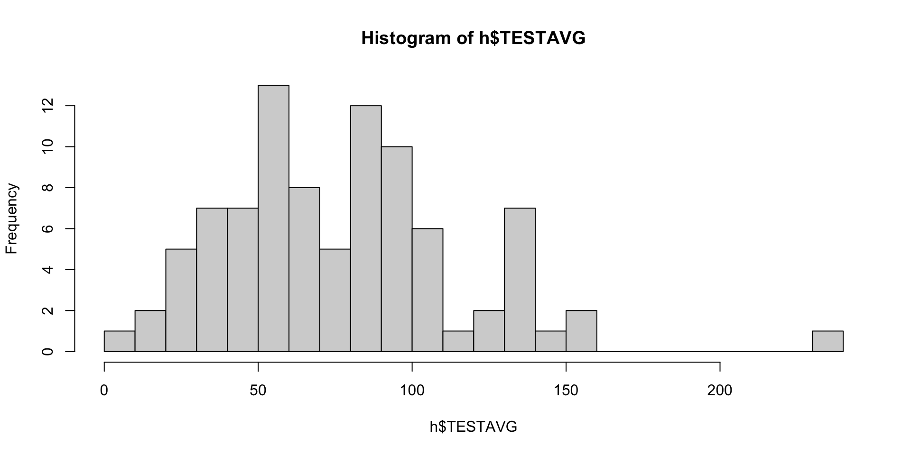

| mean | mean |
|---|---|
| 19.53279 | 27.85088 |
| mean | mean |
|---|---|
| 19.53279 | 27.85088 |

Female Male
35 87 
| Model 1 | |
|---|---|
| (Intercept) | 3.01 *** |
| (0.09) | |
| sexFMale | 0.26 * |
| (0.11) | |
| N | 114 |
| R2 | 0.05 |
| *** p < 0.001; ** p < 0.01; * p < 0.05. | |
Which of these came to mind? Which are relevant?
Note : Correlation is not causation but causation will be correlated :)

\[ \hat{Y} = a + b_1 * X_1 + {\epsilon}_i \]
\[ {\epsilon}_i = \hat{Y} - (a + b_1 * X_1) \] Error = Actual Scores - Predicted Values
How do we use this knowledge??
Sex is related to narcissism…
Narcissism is also related to testosterone (a hormone).
But if testosterone is related to sex…
How are they uniquely related?
| Model 1 | Model 2 | Model 3 | |
|---|---|---|---|
| (Intercept) | -0.34 * | 0.00 | -0.01 |
| sexFMale | 0.49 * | 0.02 | |
| test1 | 0.28 ** | 0.27 * | |
| N | 114 | 86 | 86 |
| R2 | 0.05 | 0.08 | 0.08 |
| All continuous variables are mean-centered and scaled by 1 standard deviation. *** p < 0.001; ** p < 0.01; * p < 0.05. | |||
Sex is related to narcissism…
Narcissism is also related to testosterone (a hormone).
But if testosterone is related to sex…
How are they uniquely related?
| Model 1 | Model 2 | Model 3 | |
|---|---|---|---|
| (Intercept) | -0.34 * | 0.00 | -0.01 |
| sexFMale | 0.49 * | 0.02 | |
| test1 | 0.28 ** | 0.27 * | |
| N | 114 | 86 | 86 |
| R2 | 0.05 | 0.08 | 0.08 |
| All continuous variables are mean-centered and scaled by 1 standard deviation. *** p < 0.001; ** p < 0.01; * p < 0.05. | |||
Bertrand, M., & Mullainathan, S. (2004). Are Emily and Greg more employable than Lakisha and Jamal? A field experiment on labor market discrimination. American economic review, 94(4), 991-1013. [Link]

Hoffman, M., Gneezy, U., & List, J. A. (2011). Nurture affects gender differences in spatial abilities. Proceedings of the National Academy of Sciences, 108(36), 14786-14788. [Link]

Anti-Positivism : Attempts to predict people with numbers is bad.
Positivism : We will someday make perfect predictions about people.
Post-Positivism : We will continually improve our predictions, but never get perfect.
Social Constructivism : There is no “truth” about people; we make it up.


